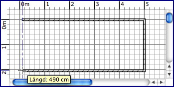

| Rita väggar | |||
För att rita väggar måste du först välja Planlösning > Skapa väggar eller välja Skapa väggar-verktyget.
Klicka i hemmets planlösning på startpunkten för den nya väggen, klicka eller dubbelklicka sedan i planlösningen på väggens
slutpunkt. Så länge du inte dubbelklickar eller trycker på Escape-tangenten så indikerar varje klick motsatt punkt på aktuell
vägg och startpunkten för nästa vägg. Medan du ritar en uppsättning väggar kommer startpunkten på den första väggen
kopplas samman till en existerande väggs start- eller slutpunkt om du klickar på den punkten, och den sista väggen kopplas
samman med en annan väggs punkt om du dubbelklickar på den. Klickade punkter ligger i mitten av ritade väggars
tjocklek; Tjockleken och höjden på nya väggar kan ändras i inställningsdialogrutan.  För att sluta rita väggar väljer du Planlösning > Välj eller väljer Välj-verktyget.
|
|